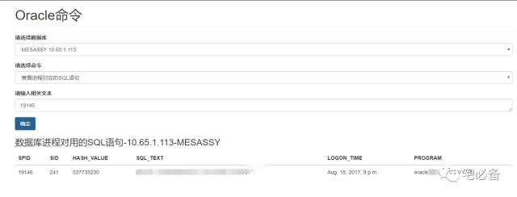

通过进程号获取SQL语句
我们在日常Oracle维护中，可能有的进程占用的CPU或者内存较高，这时我们需要知道它对应的SQL语句，下面这个功能可实现这个功能
注意：进程必须处于run状态才能查到，多个进程同时查询请用空格隔开
开发环境
操作系统:CentOS 7.3
Python版本 :2.7
Django版本: 1.10.5
操作系统用户:oracle
建立页面的步骤
我们还是通过这张图的步骤来说明如何建立页面
urls.py页面
首先是monitor/urls.py，这节不需要修改这个文件
urlpatterns = [
url(r'^$', views.index, name='index'),
url(r'^oracle_command/$',views.oracle_command, name='oracle_command'),
url(r'^commandresult/$',views.commandresult, name='commandresult'),
]
oracle_command为执行Oracle命令的页面
commandresult为执行完Oracle命令显示结果的页面
views.py
下面为commandresult对应的函数在views.py里面的写法
elif command_content=='check_process_text':
pid1=[]
try:
db = cx_Oracle.connect(username+'/'+password+'@'+ipaddress+':'+port+'/'+tnsname ,mode=cx_Oracle.SYSDBA)
except Exception , e:
content= (ipaddress+' is Unreachable,The reason is '+ str(e)).strip()
return HttpResponse(content)
else:
pid = str(request.GET['sql'])
pid=pid.split()
for i in pid:
pid1.append('\''+str(i).strip().upper()+'\'')
pid=','.join(pid1)
cursor = db.cursor()
row=getprocesstext(cursor,pid)
cursor.close()
db.close()
title='数据库进程对用的SQL语句-'+ipaddress+'-'+tnsname
tr=['SPID','SID','HASH_VALUE','SQL_TEXT','LOGON_TIME','PROGRAM']
dic ={'title':title,'tr':tr,'row':row}
return render_to_response('oracle_command_result_6.html',dic)
-
首先获取到表单中的数据，如 ipaddress,tnsname以及执行的命令
-
然后通过ipaddress,tnsname从oraclelist数据库中查找获得用户名密码用于连接
-
再判断命令内容，如果是check_process_text则首先获取进程号码(pid)并连接起来
-
在执行函数getprocesstext获取相关SQL信息,这里之所以用hash_value是因为我有9i的库
-
这里的getprocesstext函数获取Oracle 信息，包括SID,HASH_VALUE,LOGON_TIME,PROGRAM，详情看具体代码
-
最后把页面的标题以及表格的数据放到dic变量中传到 oracle_command_result_6.html模板文件中
getprocesstext函数
这里的getprocesstext函数获取Oracle 信息，包括SID,HASH_VALUE,LOGON_TIME,PROGRAM，详情看具体代码
monitor/command/getoraclecommandresult.py
def getprocesstext(cursor,pid):
fp1='select a.spid,b.sid,c.hash_value,substr(c.sql_text, 0, 40),b.logon_time,b.program from v$process a, v$session b, V$SQL c where a.addr = b.paddr and b.sql_hash_value = c.hash_value and a.spid in ('+pid+')'
s=cursor.execute(fp1)
row=s.fetchall()
return row
template文件
这里我们使用oracle_command_result_6.html文件来显示
oracle_command_result_6.html
<div id='newadd'>
<h3>{{title}}</h3>
<table class="table">
<thead>
<tr>
{% for i in tr %}
<th>{{i}}</th>
{%endfor%}
</tr>
</thead>
{% for a,b,c,d,e,f in row %}
<tbody>
<tr>
<td>{{a}}</td>
<td>{{b}}</td>
<td>{{c}}</td>
<td>{{d}}</td>
<td>{{e}}</td>
<td>{{f}}</td>
</tr>
</tbody>
{% endfor %}
</table>
</div>
该模板是一个table ，通过将传过来的变量显示在前端页面
实际效果
多个表一起查询请使用空格隔开
http://10.65.202.218:8081/monitor/oracle_command/

源码地址
源码请查看我的GitHub主页
https://github.com/bsbforever/wechat_monitor
下期将介绍如何如何通过会话查看进程号